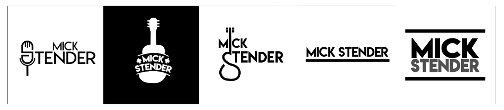

Proftaak Branding
Mick Stender
Voor de proftaak ben ik samen met mijn projectgroep bezig geweest met de branding voor een artiest van de Rock Acedemie Tilburg.
Wij hebben voor Mick Stender, een ruige, stoere Americana artiest, in dit semester verschillende
producten gemaakt voor zijn branding. Mijn bijdrage aan de proftaak en de gemaakte producten zijn hier terug te vinden.
Artistic Exploration
Aan het begin van de proftaak zijn we eerst op zoek gegaan naar hoe we Mick als artiest zien en welk gevoel we bij zijn stijl en muziek krijgen. Na aanleiding van de briefing in Tilburg zijn we als groep op zoek gegaan naar afbeeldingen,
kleuren, stijlen en andere voorbeelden die we bij Mick Stender vonden passen.
Proces
De verzamelde materialen hebben we vervolgens in een boekje bij elkaar gebracht; de Artistic Exploration. Voor het maken van dit boekje hebben we een aantal dingen samen gedaan, zoals het bepalen van de lay-out, het zoeken naar fonts en het
zoeken naar kleuren en texturen. We hebben samen gekozen voor een aantal fonts uit een grote lijst van verzamelde fonts en we hebben hetzelfde gedaan voor het de gevonden kleurencombinaties.
Vervolgens hebben we de rest van het boekje verdeeld onder de groep en heeft iedereen zijn eigen deel gemaakt. Ik heb het moodboard over de stijl van Johnny Cash gemaakt. Bij het zoeken van afbeeldingen heb ik er op gelet dat ik alleen
zwart-wit wilde gebruiken aangezien bleek dat Mick hier wel een voorkeur voor had. Vervolgens ben ik foto's gaan zoeken en heb ik gekeken naar de typografie die werd gebruikt bij poster en covers van Johnny Cash. Na het maken van het
moodboard heb ik een aantal covers en een poster van Johhny cash gedownload en hierop de naam van Mick gezet om te kijken welk effect dit zou geven.
De Artistic Exploration is hieronder te zien:
Feedback
Bij een presentatie voor Mick hebben we de Artistic Exploration laten zien en hier feedback op gevraagd. Mick vond het allereerst erg cool dat we een boekje voor hem hadden gemaakt en vond het leuk dat hij iets fysieks mee naar huis kon
nemen.
Over de rest van het werk was Mick ook tevreden. Hij vond vooral het font dat we gebruikt hebben op de voorkant "Lemon Milk" erg leuk en vond de stijl van Danny Vera goed passen. Mick vond wel dat we het beste gebruik
konden maken van rechte lijnen en vlakken in plaats van schuine vormen. Daarom hebben we afgesproken dat we de stijl simpel met vooral rechte vormen zouden houden.
Van de gemaakte voorbeelden vond hij vooral de stijl van de Johnny Cash poster erg goed gelukt.
Reflectie
Door het maken van de Artistic Exploration heb ik geleerd hoe belangrijk het is om eerst een goed beeld van in dit geval de artiest voor wie je wat gaat maken hebt. Door actief te zoeken naar de stijl en het gevoel van de artiest hebben we
een basis kunnen leggen voor de rest van de branding.
Ook heb ik, en hebben we als groep geleerd dat het een goed idee is om een opdrachtgever iets fysieks te geven als dit mogelijk is omdat het gemaakte product zo meer indruk kan maken en de kans groter is dat er later nog een keer naar wordt
gekeken.
Logo Design
Voor het maken van een brand guide moest er een logo voor Mick worden gemaakt. Aangezien mij dit erg leuk leek om te doen heb ik het grootste deel hiervan kunnen doen.
Proces
Het grootste deel van het proces voor het maken van de logo's heb ik op mijn Sco-pagina van logo design beschreven.
Ik heb bij het maken van logo's veel verschillende stijlen en soorten logo's uitgeprobeerd en deze ook telkens geïtereerd om zo tot een zo goed mogelijk resultaat te komen. Van bepaalde logo's heb ik vele verschillende versies gemaakt en door feedback de beste verder uitgewerkt. Ik heb meerdere iteraties gemaakt van de verschillende logo's om zo tot een zo goed mogelijk eindproduct te komen. Een aantal variaties zijn hieronder te zien.

Uiteindelijk hebben we er als groep voor gekozen om de onderstaande 2 logo's te gaan gebruiken als primair en secundair logo. We hebben hiervoor gekozen omdat de logo's niet te druk zijn en de naam van Mick het eerste is wat eruit springt.
We hebben ook gebruik gemaakt van het lettertype "Lemon Milk" wat Mick erg cool vond nadat hij het had gezien in onze Artistic Exploration.
Feedback
Na het maken van al deze logo's hebben we de uitgekozen logo's aan Mick te laten zien zodat hij hierop feedback kon geven. De feedback die wij van Mick kregen was positief. Zo vond hij het fijn dat we ervoor hebben gekozen om het logo simpel te houden en niet te veel extra's toe te voegen. Ook vond hij het goed dat zijn hele naam op het logo te zien was en dat dit ook centraal stond in het logo. Hij vond wel dat het logo erg breed was waardoor zijn naam bij een klein formaat misschien lastig te lezen is. Aangezien we dit zelf ook vonden hadden we ook al een secundair logo gemaakt en na deze aan Mick te laten zien was hij het met ons eens om op kleine formaten dit logo te gebruiken in plaats van het brede eerste logo en dit hebben we dan ook zo met Mick afgesproken.
Reflectie
Door het maken van al deze logo's ben ik beter geworden in het ontwerpen van een logo en het verwerken van feedback hiervoor.Door het maken van deze logo's ben ik hier gedurende het proces beter in geworden en weet ik nu beter hoe ik het maken van een logo kan aanpakken.
Ook heb ik geleerd dat het belangrijk is om meerdere versies en iteraties van een logo te maken zodat de opdrachtgever hierop feedback kan geven en zo meerdere opties heeft om uit te kiezen.
Fotografie
Naast het maken van de brandguide zijn we als groep ook veel bezig geweest met de fotografie voor Mick. We hebben verschillende fotografiesessies gehouden gedurende de 3 sprints en we hebben uiteindelijk ook foto's met Mick gemaakt.
Proces
Het grootste deel van het proces staat beschreven op mijn Sco-pagina van Studiofotografie
Bij het begin van sprint 1 hebben we als groep besloten dat we naast de brandguide van Mick ook graag de fotografie voor Mick wilden doen. Hiervoor hebben we eerst onderzoek gedaan naar studiofotografie en naar verschillende poses en het gebruik van licht. Vervolgens zijn we met een deel van onze groep de fotostudio ingedoken en hebben we een aantal foto's gemaakt om verschillende poses en lichtgebruik uit te proberen.
Een paar van foto's uit de eerste sessies:
Vervolgens hebben we op deze foto's feedback gevraagd bij Joris, waaraan we veel gehad hebben. We hebben nieuwe dingen geleerd over lichtgebruik en ook over de post-productie van de foto's. Vervolgens zijn we opnieuw foto's gaan maken in de studio. Deze keer hebben we ook een gitaar gebruikt in de foto's aangezien we Mick ook graag met zijn gitaar op de foto wilde zetten.
Een paar van foto's uit de sessies met gitaar:
Na ook voor deze foto's bij Joris te zijn geweest voor feedback hebben we deze foto's aan Mick laten zien en gevraagd wat hij er van vond. Vervolgens hebben we met hem afgesproken nog onderzoek te doen naar een aantal nieuwe poses en zijn we vervolgens samen met Mick foto's gaan maken in de studio. Hierbij hebben we veel verschillende poses, camerastandpunten en belichtingen uitgeprobeerd en hebben we met 3 camera's foto's gemaakt. Hierdoor hadden we erg veel foto's en daaruit hebben we de beste kunnen kiezen.
Een paar van foto's uit de sessie met Mick:
We hebben dus uiteindelijk vele verschillende iteraties van foto's gemaakt gedurende sprint 1, 2 en 3. We zijn begonnen met het uitproberen van poses zonder gitaar en zijn stap voor stap naar de foto's met Mick gaan werken. In de tussentijd hebben we vele foto's gemaakt die we steeds verder hebben verbeterd om uiteindelijk zo goed mogelijke foto's voor Mick te kunnen maken.
Feedback
Tijdens het proces van het maken van de foto's hebben we telkens aan Joris feedback gevraagd over onze foto's. Hieruit hebben we dingen pose en belichting kunnen aanpassen en verbeteren.
Tijdens het overleg met Mick over de brandguide hebben we ook de foto's met Mick besproken. Hieruit bleek dat Mick erg te spreken was over de foto's maar dat hij ook nieuwe poses wilde uitproberen. Daarom hebben we afgesproken dat we onderzoek gingen doen naar poses waarvan Mick nog geen foto's had. Deze hebben we vervolgens tijdens de fotoshoot met Mick ook geprobeerd. Over deze foto's hebben we nog niet veel feedback gekregen van Mick. Wel hebben we hem de goede foto's doorgestuurd zodat hij deze voor de eindpresentatie alvast kon bekijken.
Verder vond Mick onze gemaakte buitenfoto's erg cool. Hij wilde dan ook graag zelf een keer op deze locatie foto's gaan maken. Hiervoor hebben we helaas nog geen moment voor kunnen afspreken met Mick.
Een paar locatiefoto's:
Reflectie
Door de fotografiesessies hebben we als groep veel geleerd over het maken van studiofoto's. We hebben geleerd hoe we licht kunnen gebruiken om een foto een bepaald effect kunnen geven en welke impact een andere camerastandpunt kan hebben. Ook hebben we veel verschillende poses geprobeerd en vele iteraties van foto's gemaakt (eerst alleen de pose, daarna ook met een gitaar, vervolgens verschillende camerastandpunten en lichtgebruik, en uiteindelijk de foto met Mick).
Uiteindelijk denk ik dat de foto's goed gelukt zijn en dat we Mick een mooi aantal foto's kunnen geven waarmee hij zelf ook tevreden is. We hadden graag ook nog locatiefoto's met Mick gemaakt maar dit is er helaas niet meer van gekomen omdat we geen datum met Mick gepland kregen. Ondanks dit kunnen we tevreden zijn over het proces dat we hebben doorlopen om de eindfoto's met Mick te krijgen en denk ik dat de fotografie geslaagd is.
Brandguide
Het grootste deel van de proftaak draaide om het maken van de brandguide. We hebben gedurende de 3 sprints hieraan gewerkt en uiteindelijk een complete brandguide opgeleverd.
Proces
Net als bij het logo design staat een groot deel van het proces beschreven op mijn Sco-pagina van de brand guide.
Het maken van de brandguide is opgedeeld in verschillende onderdelen. We hebben van te voren gekeken naar bestaande brand-guides en we hebben op basis hiervan een inhoud voor onze eigen brandguide samengesteld. Vervolgens hebben we
onderdelen van de brand guide verdeeld in de groep. Uiteindelijk is dit samengekomen in de eerste versie van de brandguide.
De eerste versie is hieronder te zien:
De brandguide bestaat uit een korte omschrijving van Mick, het logo, de kleuren, de typografie, fotografie en een aantal voorbeelden. Zelf ben ik bezig geweest met het maken van het logo, de typografie en met de voorbeeldposter.
We hebben deze versie van de brandguide gepresenteerd aan het einde van sprint 1 aan BR-ND en de rest van de groep en leraren. We hebben hierop feedback gekregen en deze feedback hebben we hierna verwerkt in de tweede versie van de
brandguide.
Dit proces is vervolgens doorgegaan in sprint 2 en 3 en we hebben tijdens deze sprints contstant veranderingen doorgevoerd in de brandguide. Zo is de paginavolgorde tussendoor aangepast, zijn er pagina's met voorbeelden, logo guidelines en fotografie toegevoegd en is bijvoorbeeld het kleurenpallet aangepast op basis van feedback die we hebben gekregen.
Na meerdere iteraties van de brandguide is de brandguide nu af en compleet. We vinden dat de brandguide goed is gelukt en ook Mick was tussendoor steeds enthousiast over ons werk. Daarom ben ik ook trots op de brandguide die we hebben gemaakt in de afgelopen sprints.
De nieuwste versie van de brandguide is hieronder te zien:
In de uiteindelijke brandguide heb ik de volgende bijdrage geleverd:
Het logo-design, samen met Thomas; het maken van verschillende logo's en het vervolgens kiezen van de besten.
Deel van de opmaak van de brandguide; lay-out, deel opvulfoto's.
Typografie; Het samenvoegen van de gekozen lettertype met hun varianten en bijdrage in de keuze van de lettertypes.
De voorbeeldposter; design, typofrafie en fotografie combineren voor een voorbeeld.
Het website-design; Het uitwerken van een wireframe en het maken van een design met typofrafie, kleuren en fotografie als voorbeeldwebsite.
Voor de rest van de brandguide heb ik meegekeken met het proces en hierop mijn feedback/ input gegeven wanneer dit nodig was. Dit is andersom ook gebeurd bij de delen die door mij zijn gemaakt. Op deze manier hebben we de brandguide als groep in elkaar gezen en ervoor gezorgd dat we allemaal tervreden waren over het eindresultaat
Feedback
Tussendoor hebben we 1 feedbackmoment met Mick gehad over de brandguide. Hier hebben we hem de eerste versie van de brandguide laten zien en hebben we met hem besproken hoe we deze verder gingen uitwerken.
Mick was allereerst erg enthousiast over onze brandguide. Hij vond het logo goed en we hebben met hem afgesproken hoe we het logo gaan gebruiken en op welke plekken welke versie van ons logo gebruikt wordt. Vervolgens hebben we met hem het kleurenpallet besproken en deze op een paar punten aangepast om meer bij de stijl van Mick aan te sluiten. Over de fotografie was Mick ook tevreden. Hij vond de studiofot's goed maar was zelf nog wat meer op zoek naar nieuwe poses voor studiofoto's. We hebben daarom afgesproken om onderzoek te doen naar andere poses en hebben een afspraak gemaakt met Mick voor het maken van studiofoto's. Over de buitenfoto's was Mick erg enthousiast. Hij vond vooral de locatie erg vet en ook de verschillende voorbeeldfoto's die gemaakt waren vond hij erg cool. Hij wilde dan ook graag kijken of er een mogelijkheid was om zelf hier ook foto's te gaan maken. Ook de voorbeelden zoals de poster en een website design vond hij erg gaaf. We hebben afgesproken om de het website design nog iets aan te passen en met nog een aantal voorbeeldcovers van zijn nieuwe singles te komen in de volgende versies van de brandguide.
Reflectie
Van het maken van de brandguide heb ik veel geleerd over hoe een brandguide in elkaar zit en ook over de onderdelen van de brandguide heb ik veel nieuwe dingen geleerd. Zo heb ik geleerd dat vooral de merkessentie aan het begin van de brandguide erg belangrijk is aangezien je hier al je keuzes mee kan onderbouwen. Ook heb ik een beter inzicht gekregen in hoe je een brandguide opzet en welke onderdelen belangrijk zijn. Zo is het gebruikelijk dat het logo als eerste wordt getoond aangezien dit het "main item" van een brand is. Ook is het belangrijk om alle onderdelen van je brandguide samen te laten komen in een aantal voorbeelden zodat het snel duidelijk wordt hoe alle losse onderdelen samenkomen. Ook heb ik geleerd dat de brandguide op een duidelijke manier moet worden opgesteld voor de gebruiker ervan. Zo moet iemand die de brandguide gebruikt om een product te maken snel en makkelijk informatie zoals kleurencodes, logogebruik en typografiegebruik terug kunnen vinden in de brandguide.
Verder was het maken van de Brandguide een iteratief proces waarmee we zijn begonnen in sprint 1 en pas hebben afgerond in sprint 3. In deze tijd hebben we constant aanpassingen gedaan op basis van gekregen feedback van docenten, experts en van Mick zelf. In totaal hebben we in de 3 sprints 4 "eindversies" van de brandguides gemaakt. In elke versie zijn een aantal aanpassingen gemaakt om de brandguide beter en completer te maken. Door dit proces zijn we constant bezig geweest met het maken van een zo goed mogelijk en zo compleet mogelijk document voor onze artiest en vind ik dat we als groep trots kunnen zijn op het resultaat.